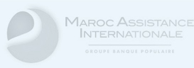

01
01
Protection du quotidien
Des solutions adaptées pour sécuriser votre véhicule, votre logement, votre santé et vos proches.
Agent agréé AtlantaSanad
Un conseil de proximité pour choisir, comparer et suivre vos contrats d'assurance avec une approche claire, humaine et adaptée au contexte marocain.
À propos de nous
Basée à Agadir, Assurances Islane accompagne les particuliers, professionnels et entreprises dans une large gamme de protections: automobile, multirisques habitation et professionnelle, responsabilité civile, accident de travail, santé et vie. L'agence associe la solidité des garanties AtlantaSanad à un conseil de proximité.
01
Des solutions adaptées pour sécuriser votre véhicule, votre logement, votre santé et vos proches.
 02
02
Une lecture claire des garanties, franchises et exclusions avant la signature du contrat.
 03
03
Un accompagnement personnalisé pour vos attestations, renouvellements et dossiers de sinistre.
Conseil et expertise
Un accompagnement concret pour clarifier vos garanties, anticiper les risques et suivre vos démarches.
Besoin, budget, obligations et risques sont clarifiés avant la proposition. L'objectif est de comprendre ce qui est utile, optionnel ou à éviter.
Voir l'accompagnementAnalyse de vos besoins et choix des garanties adaptées.
Premières démarches, pièces utiles et délais à respecter.
Lecture de vos contrats pour repérer manques et doublons.
Attestations, avenants, échéances et suivi des demandes.
Catalogue
Une sélection structurée des offres AtlantaSanad pour particuliers, professionnels et entreprises.
Responsabilité civile, dommages, vol, incendie, assistance et services d'indemnisation selon la formule choisie.
Demander conseilProtection du logement, biens mobiliers, dégâts des eaux, incendie, vol et responsabilité civile familiale.
Protéger mon logementCouverture santé et hospitalisation au Maroc ou à l'étranger, selon le profil et le niveau de garantie.
Comparer les optionsConstitution progressive d'une épargne retraite et solutions de prévoyance pour préparer l'avenir.
Simuler mon besoinGaranties dédiées aux embarcations de plaisance, responsabilité, dommages et assistance selon usage.
Être accompagnéUn capital ou des prestations en cas d'accident de la vie privée, professionnelle ou lors de déplacements.
Vérifier les garantiesMultirisque bureau pour professions libérales, TPE et PME: locaux, matériel, responsabilités et assistance.
Assurer mon bureauProtection de l'activité commerciale contre incendie, vol, dégâts, pertes et responsabilité civile.
Évaluer mes risquesCouverture de parcs automobiles professionnels, véhicules de service, utilitaires et engins selon activité.
Optimiser ma flotteRC exploitation, RC décennale, scolaire ou sport pour couvrir les dommages causés aux tiers.
Choisir ma RCRC transport, marchandises transportées, logistique et garanties adaptées aux flux terrestres, maritimes ou aériens.
Couvrir mes marchandisesBris de machine, tous risques informatiques, multirisque industrielle et tous risques chantier.
Analyser mon activitéCouverture des salariés, frais médicaux, indemnités, rentes et extensions pour missions ou trajets.
Mettre en conformitéSolutions collectives pour fidéliser les collaborateurs: retraite, prévoyance et complémentaire santé.
Structurer un avantageMéthode
01
Situation, budget, obligations légales et risques réels sont clarifiés avant toute proposition.
02
Les garanties utiles sont distinguées des options secondaires pour garder un contrat lisible.
03
L'agence suit les documents, renouvellements, attestations et déclarations de sinistre.
Sinistre
Auto, habitation, santé ou entreprise: rassemblez les pièces disponibles, prenez des photos si nécessaire et contactez l'agence pour être orienté vers la procédure appropriée.
Questions utiles
Non. Assurances Islane est un agent agréé AtlantaSanad : l'agence conseille, distribue et accompagne les contrats de la compagnie.
Vous pouvez utiliser le formulaire de devis, appeler l'agence au +212 7 07 08 05 59 ou envoyer un message WhatsApp. Précisez le produit souhaité, votre usage et vos coordonnées.
Préparez la carte grise, la CIN, le permis de conduire, l'usage du véhicule et l'ancien contrat si vous en avez un.
Le Code des assurances prévoit généralement une déclaration dans les cinq jours à partir de la connaissance du sinistre, sauf dispositions particulières. Contactez rapidement l'agence pour confirmer la procédure.
La franchise est la somme qui reste à la charge de l'assuré lors du règlement d'un sinistre. Son montant et son application dépendent du contrat.
Le prix doit être comparé aux exclusions, plafonds, franchises, services d'assistance et obligations légales liées à votre situation.
Nos partenaires
Un accompagnement concret pour clarifier vos garanties, anticiper les risques et suivre vos démarches.

Contact
Décrivez votre besoin et l'agence pourra vous orienter vers la formule adaptée. Les coordonnées exactes de l'agence peuvent être ajoutées dans cette zone avant publication.